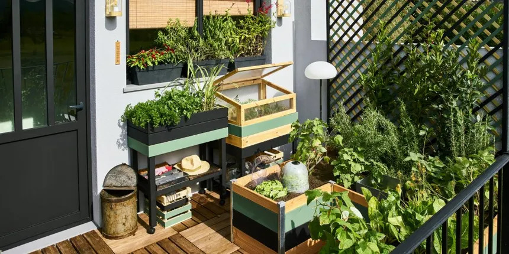

Formations
BUT Réseaux et Télécommunications | IUT UCA Clermont-Ferrand
2024-maintenant
J'apprends à construire et à maintenir une structure informatique. J'étudie aussi les manières dont ils peuvent communiquer ensemble.
BUT Science des Données | IUT UCA Aurillac
2022-2024
J'ai acquis des compétences dans le cycle de vie de la donnée. En partant de la collecte, passant par la gestion et le nettoyage puis la mise en forme via de la datavisualisation.
BACCALAURÉAT STI2D | Lycée LaFayette Clermont-Ferrand
2020-2022
La série STI2D m'a permis d’acquérir des compétences technologiques étendues, transversales à tous les domaines industriels. Dans mon cas, je me suis également spécialisé dans la programmation en intégrant l'option SIN.
Expériences
Développement d'une photothèque
Date : Avril 2024 - Juillet 2024
Contexte : Stage de 4 mois dans le cadre de ma 2ème année de BUT Science des Données
Objectifs : Développer une photothèque en ligne pour la communauté de communes entre Dore et Allier.
Travaux réalisés : Recherche de solutions ; Installation d'une solution ; Création de tutoriels pour implémentation
Résultats : Solution durable et simple à prendre en main
Manutention en intérimaire
Date : Juillet 2023
Contexte : Missions de plusieurs jours réalisées pendant les vacanes d'été 2023.
Objectifs : Manipulation de matériels, déplacement de marchandises.
Travaux réalisés : Livraison de boissons aux commerces ; installation de caisses de supermarché.
Résultats : Interventions et manipulations satisfaisantes.
Technicien de maintenance
Date : Juillet 2023
Contexte : Missions de plusieurs jours réalisées pendant les vacanes d'été 2023.
Objectifs : Installation et maintenance de matériels de protection incendie.
Travaux réalisés : Planification de nouveaux locaux ; installation d'appareils anti-incendie ; Maintenance efficace des appareils
Résultats : Mise en état fonctionnel des appareils de protection incendie.
Compétences
Réseaux
Je me distingue par ma flexibilité et ma capacité à collaborer en équipe pour la mise en place d'infrastructures réseau performantes. Ma veille technologique constante et ma résolution de problèmes efficace garantissent des solutions adaptées et durables.
Télécommunications
Je me distingue par ma précision et ma gestion du temps, essentielles pour déployer des infrastructures performantes.Mon esprit critique et ma curiosité technique me permettent d’anticiper les besoins et d’innover dans ce domaine en constante évolution.
Programmation
je m’appuie sur ma logique et ma créativité pour concevoir des solutions efficaces en Python. Mon attention aux détails et ma capacité à optimiser le code garantissent des applications performantes et fiables.
Projets
Sensibilisation à l'hygiène informatique et à la cybersécurité
En savoir plusDivers
Cuisine
Je découvre le monde de la cuisine et je suis toujours à la recherche de nouvelles recettes. Je cherche à perfectionner ce que je connais déjà et je m'applique à adopter de nouvelles pratiques.
Potager
En lien avec ma passion pour la cuisine, je prépare un plan pour développer un potager chez moi. Il s'agit de la première année où je me lance dans ce projet et je suis impatient de récolter le fruit de mon travail.
CV
 Ouvrir
Ouvrir